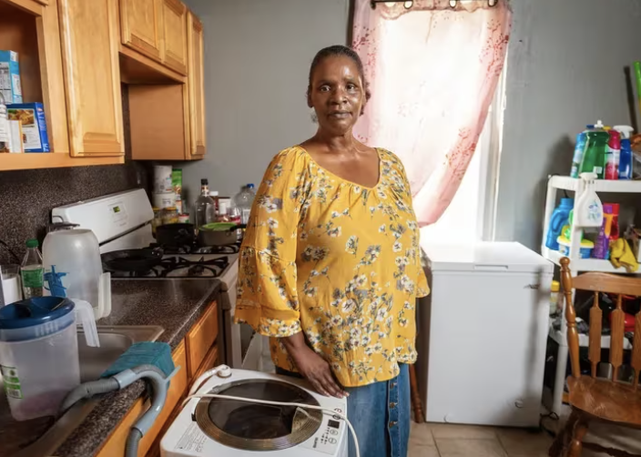

I wanted to use Chat GBT to not only come up with some solutions, but be a leader in fighting for a solution.
Energy - PECO
- PECO, Pennsylvania’s largest electric and gas utility energy company, continues to prioritize profit over environmental and community costs. PECO’s impacts on the Philadelphian community are vast, with a combination of power outages, rising energy bills, and burning of fossil fuels. The community faces challenges in transitioning to clean energy due to PECO’s power and reluctance to shift its energy usage. Can Chat GBT assist in leading a revolution to solve this crisis?
Conversation with Chat GBT.
First, I informed Chat GBT about my topic, then asked how one can make a difference.
In Chat GBT’s words…
Advocate for Policy Change: Push for local and state policies that encourage the adoption of renewable energy and energy-efficient practices. These policies can include renewable energy mandates, tax incentives, and emissions regulations, all of which can accelerate the transition away from fossil fuels.
Support Community Initiatives: Get involved in or back community-driven projects focused on renewable energy adoption and energy efficiency. Supporting initiatives such as community solar projects or local energy co-ops fosters grassroots efforts towards cleaner energy solutions.
Reduce Energy Consumption: Take steps to decrease personal energy usage by implementing energy-efficient measures in homes and businesses. Simple actions like using energy-efficient appliances, improving insulation, and being mindful of energy consumption habits can contribute to overall energy savings.
Invest in Renewable Energy: Consider investing in renewable energy options like rooftop solar panels or community renewable energy projects. By financially supporting renewable energy initiatives, individuals can help drive demand for clean energy alternatives and reduce dependence on fossil fuels.
Advocate for Utility Reform: Push for reforms within the utility sector to increase transparency and accountability while prioritizing clean energy. Advocating for policies that promote competition in the energy market, consumer choice, and environmental responsibility can influence utility practices towards cleaner energy sources.
Engage with PECO: Directly engage with PECO through public forums, stakeholder meetings, or advocacy campaigns to voice concerns and demand action towards cleaner energy solutions. By amplifying community voices and exerting pressure on the utility, individuals can influence corporate decision-making and push for a transition to clean energy.
Educate and Raise Awareness: Spread awareness about the benefits of transitioning to clean energy and the impacts of fossil fuel dependence on the environment and public health. Educating others about the importance of clean energy solutions can mobilize support and generate momentum for change within the community.
Then, I wanted to know if Chat GBT could have a say in this.
- I asked Chat GBT if there was a way it can guide this.
- “Can you, as chat gbt, guide this revolution? Share your thoughts, get people interested. Can AI be used to guide community dilemmas?”
Chat GBT replied…
As an AI, I can provide information, guidance, and support to help facilitate discussions and actions around community issues, including energy transitions and environmental advocacy. While I can’t independently lead a revolution or directly participate in human-led movements, I can certainly assist in the following ways:
Providing Information: I can offer factual information about renewable energy technologies, climate change, environmental impacts, and policy options to help people understand the issues at hand.
Offering Perspectives: I can provide diverse perspectives on complex topics, helping to broaden understanding and encourage critical thinking about potential solutions.
Facilitating Discussions: I can facilitate discussions by posing questions, prompting exploration of different viewpoints, and encouraging constructive dialogue among community members.
Analyzing Data: I can analyze data related to energy usage, emissions, and environmental impacts to help inform decision-making and advocacy efforts.
Offering Ideas: I can suggest potential strategies, tactics, and actions that communities can take to address energy-related challenges and promote sustainable practices.
Engaging and Inspiring: Through conversation and interaction, I can engage with individuals and inspire them to take action, whether it’s through advocacy, behavior change, or community organizing.
Educating and Raising Awareness: I can help educate people about the importance of clean energy and environmental stewardship, raising awareness and mobilizing support for positive change.
While AI can play a supportive role in guiding community dilemmas, it’s essential to recognize that meaningful change ultimately depends on the collective actions and decisions of individuals and communities. AI can complement human efforts by providing information, insights, and tools to empower people to drive positive change in their communities.